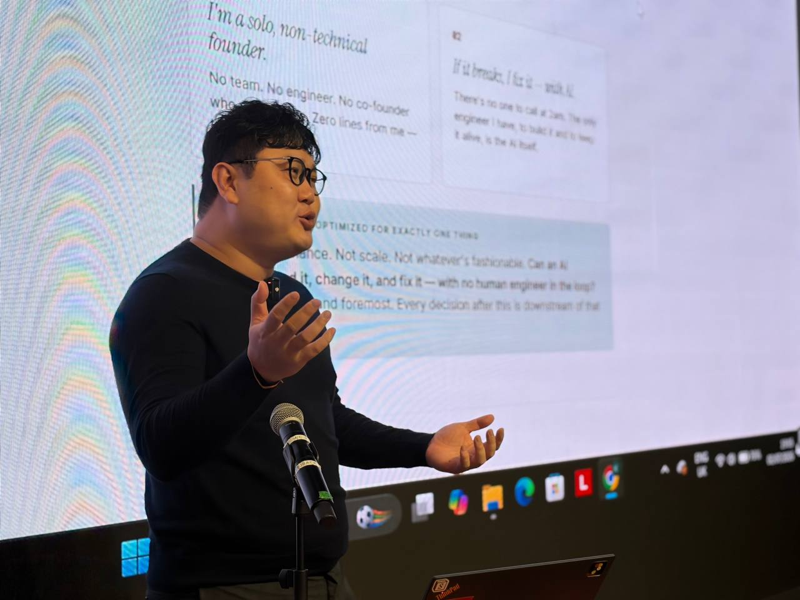
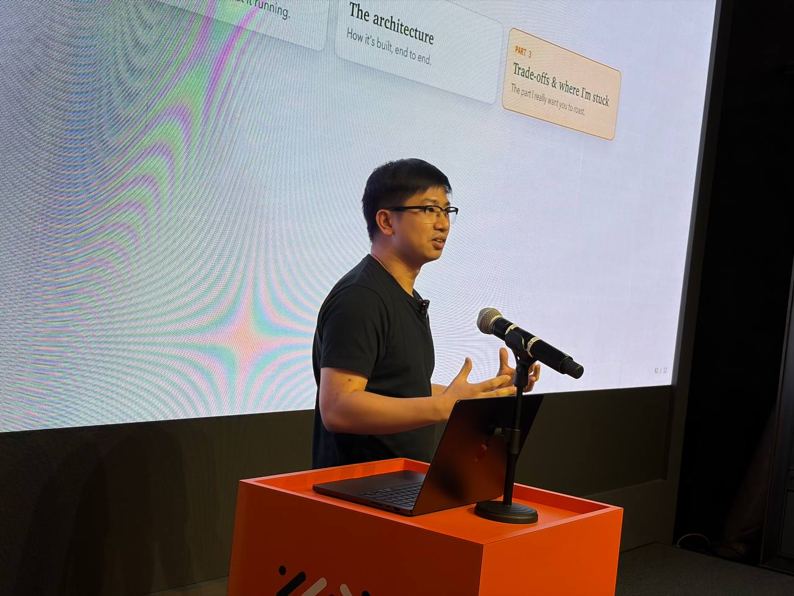
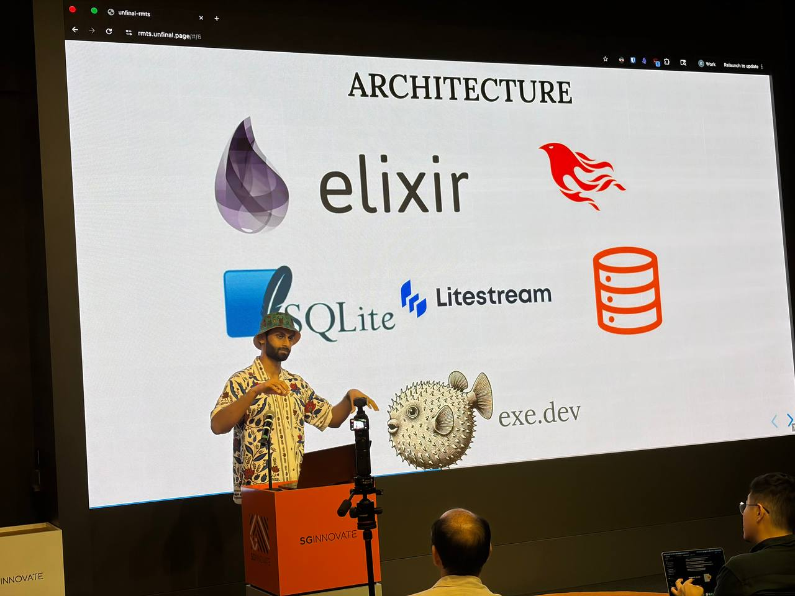

Roast #7 · July 2, 2026 · Singapore
Three builders unpacked an AI-native astrology product, an AI repair loop for Playwright, and a server-first real-time application. This recap preserves the practical decisions, trade-offs, and questions raised in the room.
Speaker 01
01
Product & Constraints
Two constraints shaped everything: Kong is a solo, non-technical founder who has written zero lines of code, and if it breaks, he fixes it with AI. The stack is optimised for exactly one question: can an AI understand, change, and fix it with no human engineer in the loop?
Zhiji evolved through three versions. v0 was screenshots pasted into Claude. v1 added a database for memory. v2 removed the astrology maths from the model, split a fragile single page into separate rooms, and added live streaming. Each version was a wall hit and rebuilt around.
02
Six Building Blocks
BrowserPlain ES-module JS. One
app.html shell mounts a surfaces/*.js module per room. No React, Vue, bundler, or build step.One Door
api/generate.js routes every reading and chat request, streams over SSE, stamps pending → completed / failed, and re-drives failures via recovery sweeps.Calculator~89 deterministic modules do the astrology maths. The model never performs chart calculations. Same input always yields the same chart.
Voices
lib/providers.js abstracts the model: Sonnet 4.6 default, Opus on chat turns, DeepSeek + GPT in the roster. Auto-fallback on provider outage.MemoryOne Supabase / Postgres DB: profiles, frozen readings, idempotent credit ledger, editable doctrine, runtime config, and subscriptions. Row-level security enabled.
TillStripe checkout, webhook, and portal. The coin ledger is idempotent per key — a retried webhook cannot double-grant. Paid readings are frozen and cache-keyed, never regenerated.
03
Engine & Dependencies
The astrology engine is homegrown (~89 modules): four pillars, ten gods, hidden stems, 納音, five-element weighting, luck cycles, full 紫微斗數 chart, 神煞, 用神, the 盲派 layer, and 易經 casting. Validated against an external golden reference (bazi.today) and the doctrine master's calibrated set.
Three boundary bugs were found and fixed: the 子時 midnight day-roll, the month solar-term boundary, and 立春-day hour precision.
The one external dependency is lunar-javascript@1.7.4, used only for raw calendar astronomy (Gregorian ↔ lunar conversion and solar-term instants). If its maths were ever off at a boundary, it would silently tilt every chart. De-risking today: exact-version pin, everything on top is homegrown, and golden-reference validation. Next step: an automated golden-chart regression suite.
04
Agent Workflow
Kong coordinates seven specialist AI agents: CPO (product plan), CFO (money), CMO (marketing), UX (user behaviour), CD (design), TM (writes & ships code), and BM (astrology master). They never talk to each other directly. Kong routes work between them using an agent orchestrator and a custom /handover command.
The principle: explicitly decide when to continue an existing thread, when to clear context, and when to start a new thread. Validate AI-generated architecture by having multiple LLMs critique each other's decisions rather than relying on a single model.
05
Latency, Memory & Cost
- Latency: Pre-compute predictable results instead of generating on demand. Use token streaming so users see the response immediately. Evaluate Iris.io as a potential solution.
- Memory: Use Haiku to periodically compress or summarise conversation memory. Compact before adding back to the context window. Prune unnecessary context to prevent degradation.
- Cost: Pre-compute frequently requested outputs. Benchmark cheaper models for comparable quality. Per-generation USD is captured in
generations.total_cost_usd. Moving astrology off the model made it both cheaper and exact.
06
UI/UX & Prompt Engineering
Rather than prompting from scratch every time, provide the AI with a mood board, a brand guide, and a design system as persistent references to enforce consistent UI and UX decisions.
Prompt practice: at the end of each week, ask the LLM to review the week's interactions, identify better prompting strategies, and refine techniques based on actual usage rather than theoretical best practices.
07
Known Weak Points
- One switch, no undo.
admin_settingsis read live, so a flip takes effect instantly. No staged rollout, no review gate, no rollback. This is the first thing Kong would harden. - Upstream astronomy dependency. The base calendar/solar-term library is the one layer Kong didn't write. Version-pinned, but no automated golden-chart net to catch drift.
- Solo human in the loop. A 7-agent fleet builds and maintains it; Kong routes between them and has written zero lines. Blind spots he structurally cannot see from inside — hence the roast.
Speaker 02

01
Backend Services
Running long-lived services in the backend instead of the browser allows them to:
- Survive browser refreshes.
- Maintain agent state across sessions.
- Avoid restarting workflows when the frontend reloads.
02
Agent Guardrails
A common issue is agents modifying requirements while implementing them. Possible guardrails:
- Make PRD files read-only for implementation agents.
- Separate planning agents from coding agents.
- Treat the PRD as the immutable source of truth throughout execution.
03
Claude CLI Workflow
claude -p bypasses the Claude TUI. It executes prompts directly from the terminal, making it better suited for automation and scripting.
The interactive REPL (TUI) remains useful when you need to interrupt long-running tasks, exercise more control over the execution process, or debug and experiment during development.
04
Data Management
- File-backed stores: Persist data in files rather than purely in memory. Users can directly inspect changes, improving transparency and debuggability.
- Git diff integration: Fernandi implemented Git diffs so users can compare previous and current data, review exactly what the AI changed, and build trust before accepting modifications.
05
AI-Powered Testing
Test case generation: Inputs are user stories and the existing codebase. The AI predicts deterministic test cases. Users validate results against video recordings or execution evidence.
Cost optimisation: Only use LLMs where they provide meaningful value. AI generates test cases; test execution remains deterministic. Only failed application logs are sent to the LLM for diagnosis — successful logs are ignored. This minimises token usage while preserving AI assistance where it matters.
06
Demo
Speaker 03

01
Real-Time Architecture
Server-first applications: For real-time applications, exe.dev runs services on a VPS, with everything happening on the server rather than in the browser.
Phoenix + LiveView: Phoenix LiveView allows developers to write only server-side code. Business logic lives entirely on the server. Phoenix automatically handles UI diffing and updates, reducing frontend complexity while enabling real-time interactions.
Persistent connections: A heartbeat mechanism keeps WebSocket connections alive, enabling continuous real-time communication between client and server.
02
UI/UX Design Workflow
Avoiding "AI Slop": Useful design reference libraries to steer AI-generated interfaces toward higher quality:
- Impeccable Style — AI Slop Gallery
- Mobbin
- Toools.design
- Aura.build
AI-assisted UI research: Instead of asking an LLM to design from scratch: research similar products, gather user feedback and reviews, identify common UI pain points, compile the findings into a comprehensive design prompt, and generate UI based on those insights rather than generic prompts. This grounds the design in real user preferences instead of the model's default patterns.
Accessing auth-gated websites: Use Pi Computer Use to interact with websites behind authentication that traditional crawlers cannot access.
03
LLM Behaviour
DeepSeek and Mimo observations: they tend to be eager to take action and may begin implementing solutions before fully validating requirements. Additional guardrails or planning steps are needed before execution.
04
Coding Harnesses
Areas to explore: Pi Code (pi.dev) as a coding harness, compared against OmO for Codex workflows. Evaluate based on developer experience, reliability, tool integration, and agent orchestration capabilities.
Who was in the room
Demographic breakdown
Organisation type
Startups 34.9%
SMEs 27.0%
Government 19.0%
Corporate 19.0%
Seniority
Lead / IC 40.0%
Junior 32.0%
C-suite / Founder 17.3%
Student / Intern 10.7%
Role type
Developers / Engineering 57.3%
Developer-curious / Other 25.3%
Developer-adjacent 17.3%
Excludes unknown / self / not-applicable and higher-learning / student orgs.
Venue sponsor

SGInnovate
PIC: An Ting
Event ops volunteers